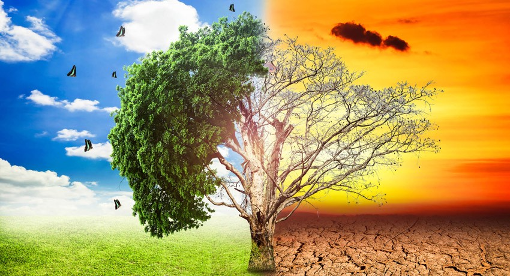
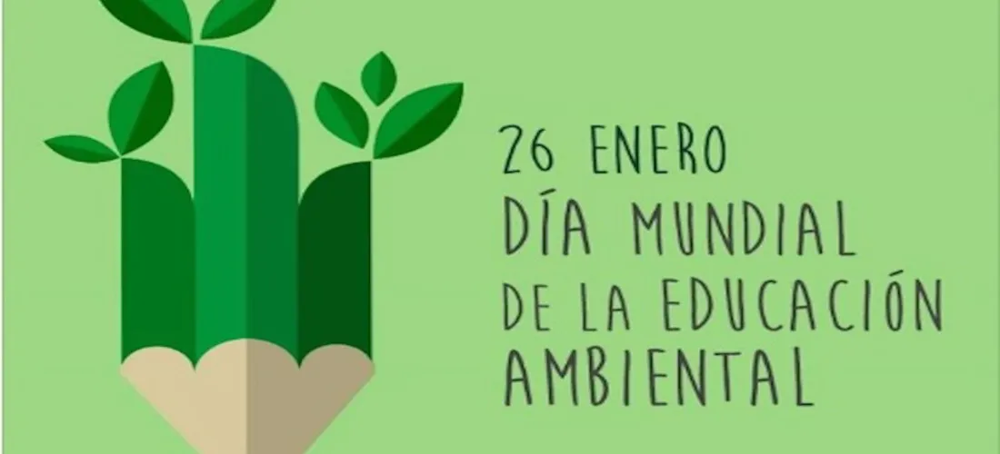
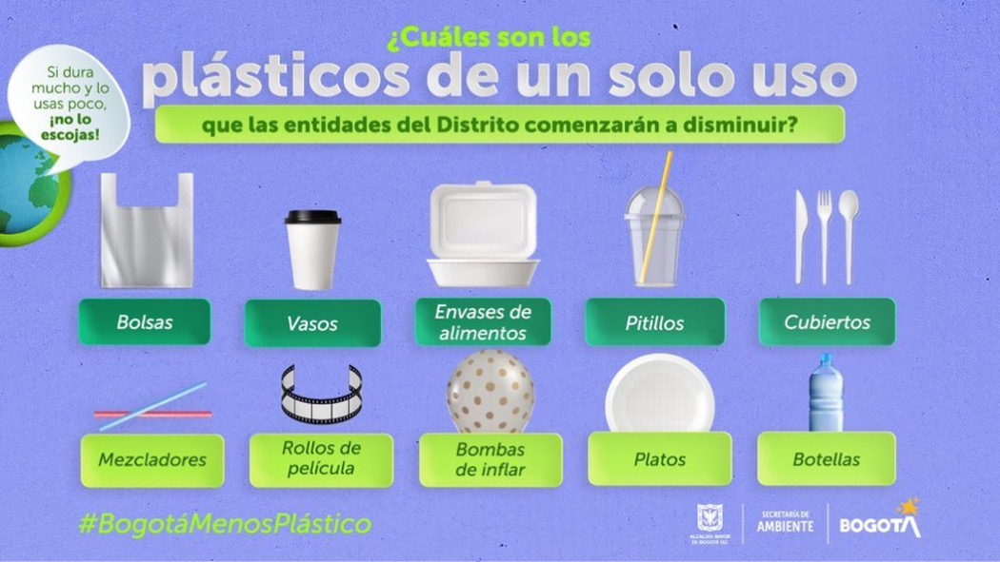
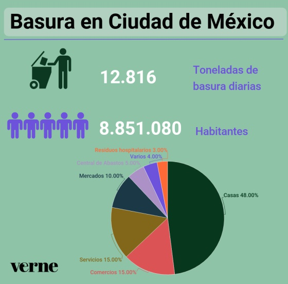
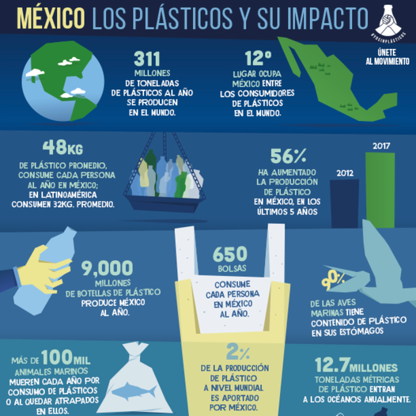
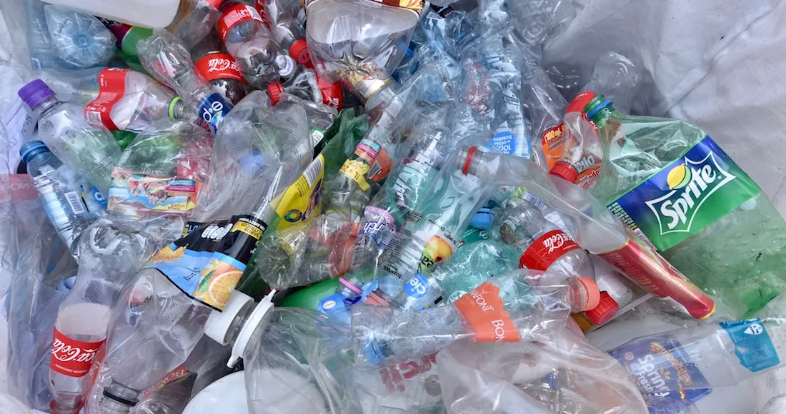

Investigación
1. ¿Qué es el impacto medioambiental?
El impacto medioambiental se refiere a los efectos que las actividades humanas y naturales tienen en el medio ambiente. Esto puede incluir la contaminación del aire, del agua y del suelo, la deforestación, la pérdida de biodiversidad, el cambio climático, entre otros. Es un tema muy importante ya que nuestras acciones diarias pueden tener un impacto significativo en el planeta.
2. Día Mundial de la Educación Ambiental
El Día Mundial de la Educación Ambiental se celebra el 26 de enero de cada año. Este día tiene como objetivo crear conciencia sobre la importancia de la educación ambiental y promover la participación activa en la protección del medio ambiente. La educación ambiental es fundamental para fomentar la sostenibilidad, el respeto por la naturaleza y la adopción de prácticas responsables para cuidar nuestro planeta.
3. Los retos de la educación ambiental en México
En México, la educación ambiental enfrenta varios retos importantes. Algunos de ellos incluyen:
1. Acceso equitativo a la educación ambiental: Asegurar que todas las personas, independientemente de su ubicación geográfica o condición socioeconómica, tengan acceso a una educación ambiental de calidad.
2. Integración curricular: Lograr que la educación ambiental esté integrada de manera efectiva en los planes de estudio de todas las instituciones educativas, desde preescolar hasta la educación superior.
3. Conciencia y participación ciudadana: Promover una mayor conciencia sobre los problemas ambientales y fomentar la participación activa de la sociedad en la conservación del medio ambiente.
4. Capacitación docente: Brindar formación continua a los docentes para que puedan impartir una educación ambiental efectiva y actualizada.
4. ¿Qué son los plásticos de un solo uso?
Los plásticos de un solo uso son productos fabricados con plástico que están diseñados para ser utilizados una sola vez antes de ser desechados. Estos incluyen artículos como bolsas de plástico, envases de alimentos, utensilios desechables, pajitas, botellas de agua y envoltorios de un solo uso. Debido a su corta vida útil, estos productos generan una gran cantidad de residuos plásticos que pueden tener un impacto negativo en el medio ambiente si no se gestionan adecuadamente. La reducción del uso de plásticos de un solo uso es un tema importante en la lucha contra la contaminación por plásticos.
5. ¿Por qué es necesario reducir el consumo del plástico?
Es necesario reducir el consumo de plástico por varias razones fundamentales. En primer lugar, el plástico es un material que tarda mucho tiempo en degradarse, lo que significa que los desechos plásticos pueden persistir en el medio ambiente durante cientos de años, causando contaminación en tierra y agua.
Además, la producción de plástico conlleva la extracción de recursos naturales y la emisión de gases de efecto invernadero, contribuyendo al cambio climático. La incineración de plásticos también libera contaminantes tóxicos en el aire.
Los desechos plásticos representan una grave amenaza para la vida silvestre, ya que los animales pueden ingerirlos o quedar atrapados en ellos, lo que puede causar daños graves e incluso la muerte.
Por todas estas razones, reducir el consumo de plástico es crucial para preservar el medio ambiente, proteger la vida silvestre y mitigar el cambio climático.
6. ¿Cuánto plástico se produce al año en México?
México produce alrededor de 12 millones de toneladas de plástico al año, lo que representa una cantidad significativa de desechos plásticos. Esta producción de plástico tiene un impacto considerable en el medio ambiente, especialmente si no se gestiona adecuadamente. La gestión responsable de los desechos plásticos y la promoción de alternativas sostenibles son aspectos clave para abordar este desafío.
7. A nivel global ¿En qué lugar es considerado México como responsable de la contaminación por el consumo de plásticos?
México es considerado país responsable en la contaminación global, al ocupar el 12º lugar en el consumo de plásticos y ser el productor del 2 por ciento de productos de este material a nivel mundial, ante lo cual es urgente reglamentar y regular el manejo de residuos de todo envase utilizado

8. En México, ¿cuánto plástico produce una persona al año?
En México, se estima que una persona promedio consume alrededor de 48 kilogramos de plástico al año. Esta cantidad incluye diversos productos de plástico utilizados en la vida diaria, como envases, bolsas, botellas, utensilios desechables, entre otros. La reducción de este consumo y la adopción de alternativas sostenibles son aspectos importantes para mitigar el impacto ambiental del uso excesivo de plástico.
9.¿Por qué México se encuentra entre los países que produce mayor cantidad de polietileno tereftalato (PET)?
México se encuentra entre los países que produce mayor cantidad de polietileno tereftalato (PET), debido al alto consumo de refrescos y de agua embotellada. Se estima que al año se producen 200 botellas de PET por cada mexicano.
